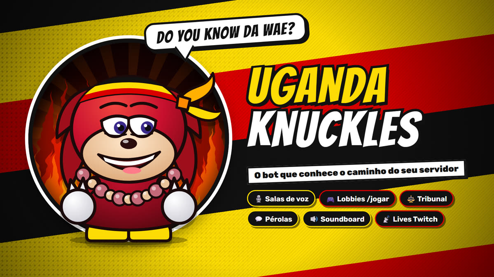

Salas de voz
Entre no canal hub e ganhe uma sala só sua. Trave, limite vagas e convide quem quiser. Quando esvazia, ela some.
O bot que conhece o caminho do seu servidor. Voz, jogos, zoeira e organização num lugar só.
Seis módulos prontos, todos por slash commands. Nada de prefixo para decorar.
Entre no canal hub e ganhe uma sala só sua. Trave, limite vagas e convide quem quiser. Quando esvazia, ela some.
Use /jogar, marque o horário e veja quem confirmou.
O servidor vota e o réu fica com um apelido humilhante por algumas horas.
Salve as frases mais memoráveis do chat e sorteie uma quando a conversa esfriar.
Toque sons no canal de voz com um comando. O bot não grava o que você fala.
Eventos com lembretes, listas de presença, bloco de notas coletivo e avisos de live da Twitch.
O link de instalação pede só o necessário. Você pode revogar qualquer uma nas configurações do servidor.
O bot guarda só o que precisa para funcionar e limpa o resto sozinho.
Ler a Política de Privacidade completa ou os Termos de Serviço.

Um clique, escolha o servidor e pronto. Os comandos aparecem com /.
O bot responde apenas em servidores autorizados pelo desenvolvedor. Para liberar o seu, escreva para lucascamy@hotmail.com.